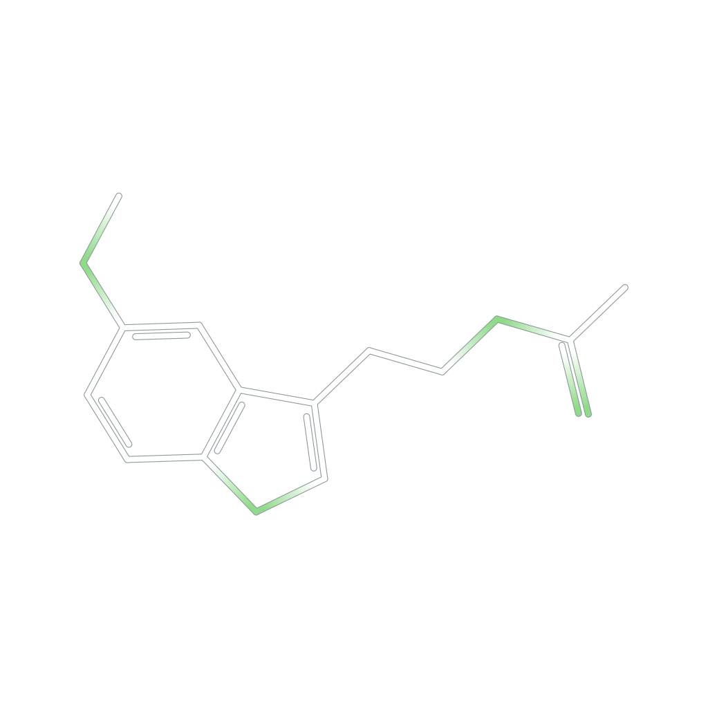
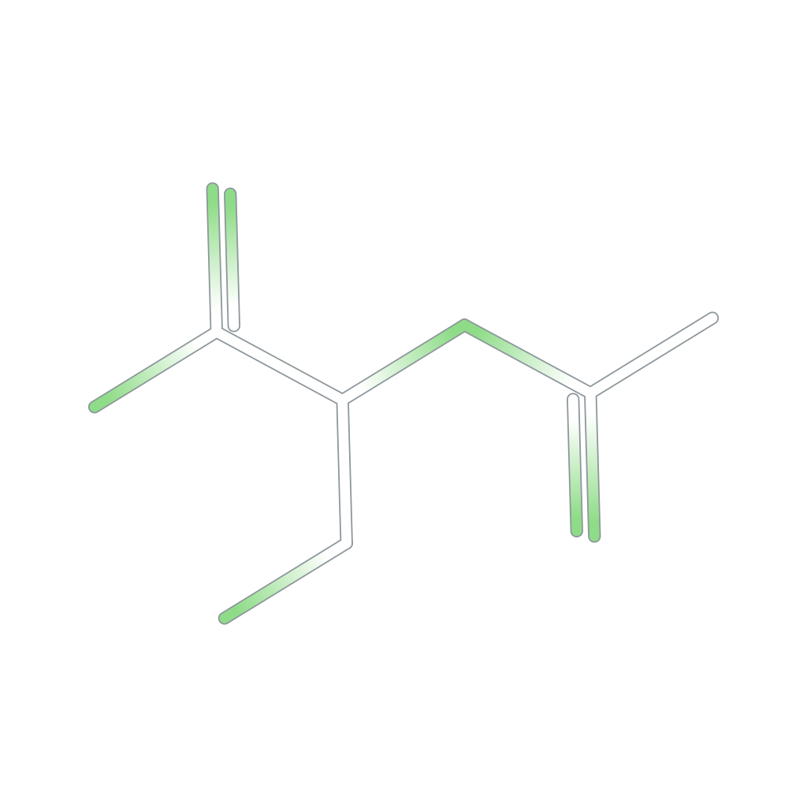
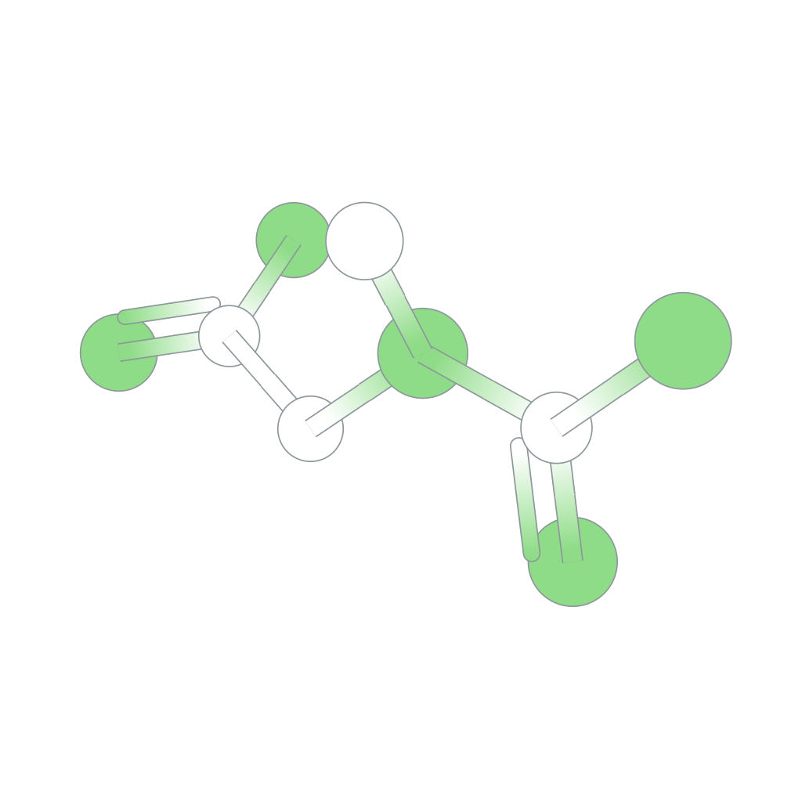
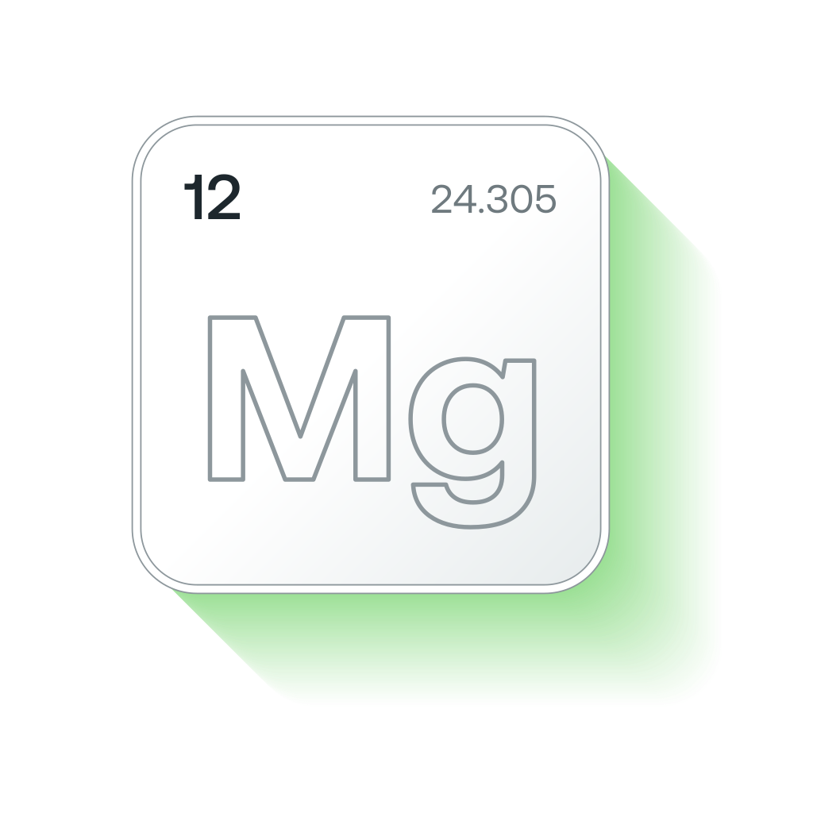
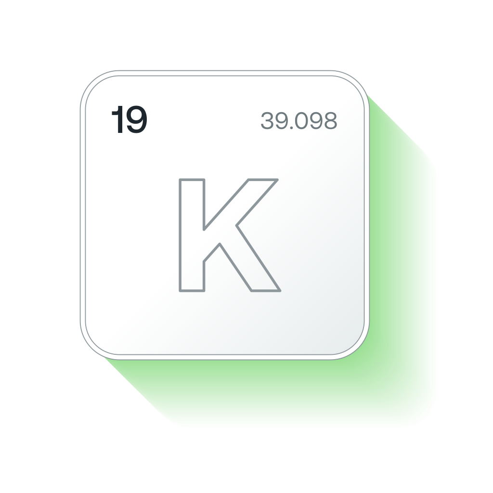
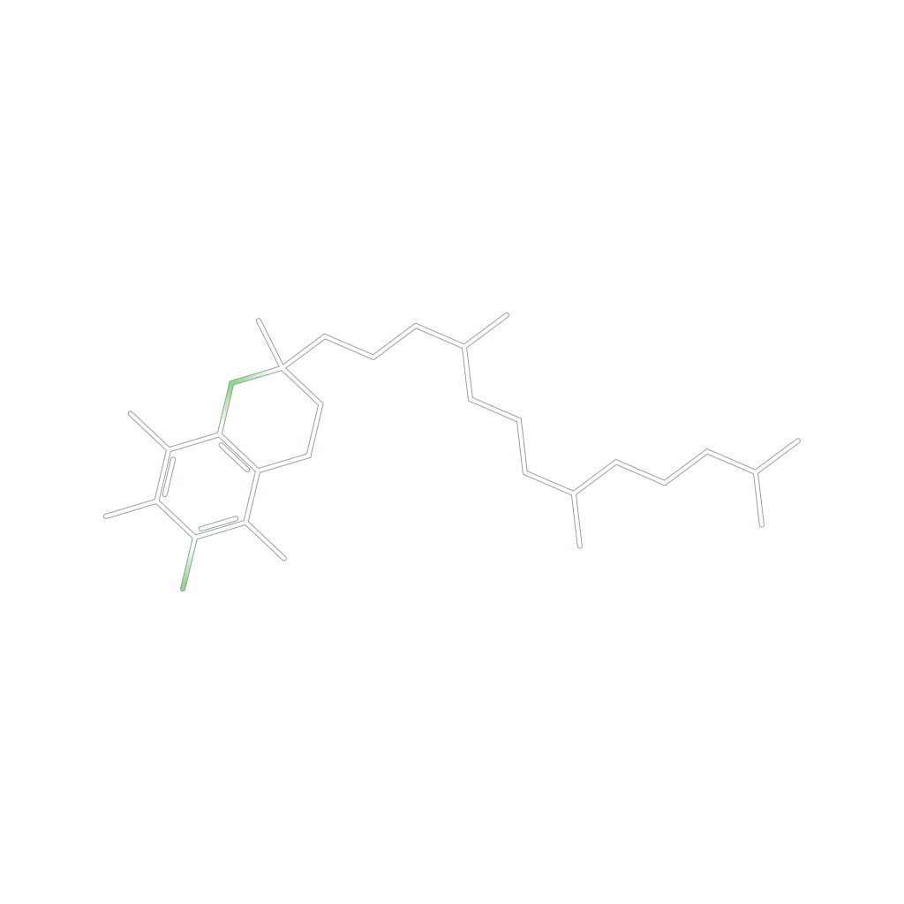
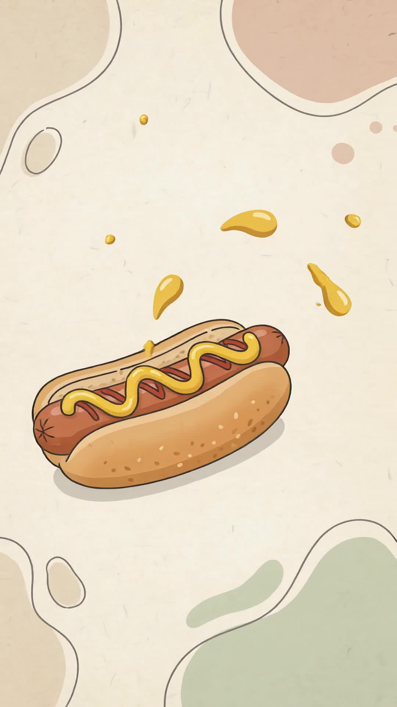
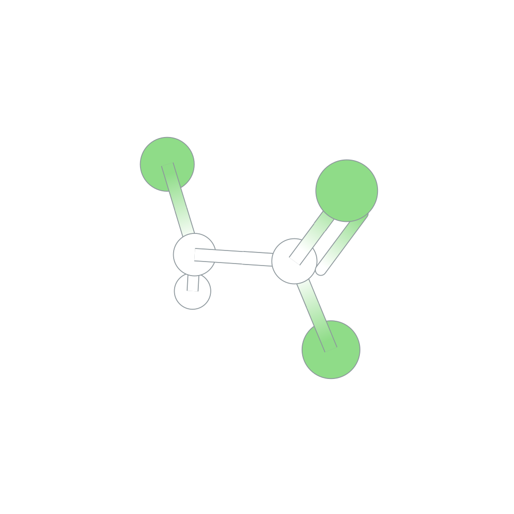
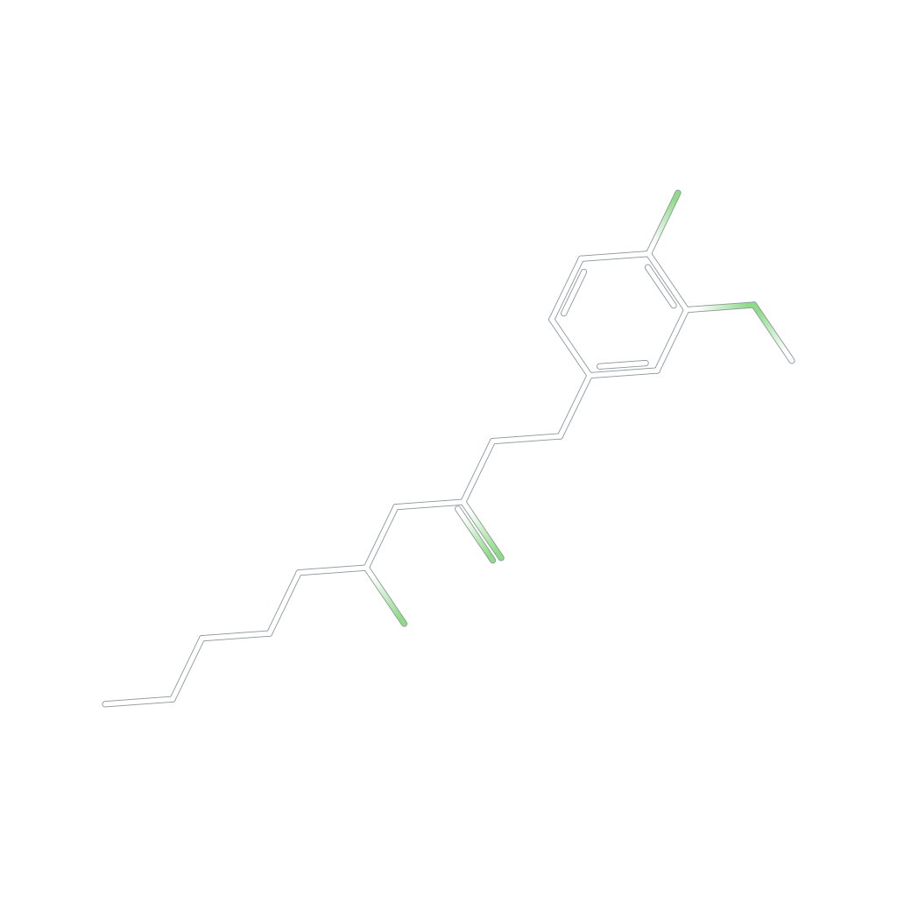

Melatonin
IBS symptoms eased in 7 trials
Antioxidant defense, detoxification and respiratory health.

Antioxidant defense, detoxification and respiratory health.
One a day, with the sources at aiww.io

One a day, with the sources at aiww.io
In 1618 some cows refused to drink from a spring.

MagnesiumTrucks of bananas have set off radiation alarms at ports.

PotassiumA seed can lie in cold soil for years without its oil going off.

Vitamin EIt has been in the jar on your table all along.

TurmericIn adults with untreated high blood pressure. The trials were short.

IBS symptoms eased in 7 trials

About 2 fewer migraines a month

A very small drop in body fat
In adults with untreated high blood pressure. The trials were short.
IBS symptoms eased in 7 trials
About 2 fewer migraines a month
A very small drop in body fat